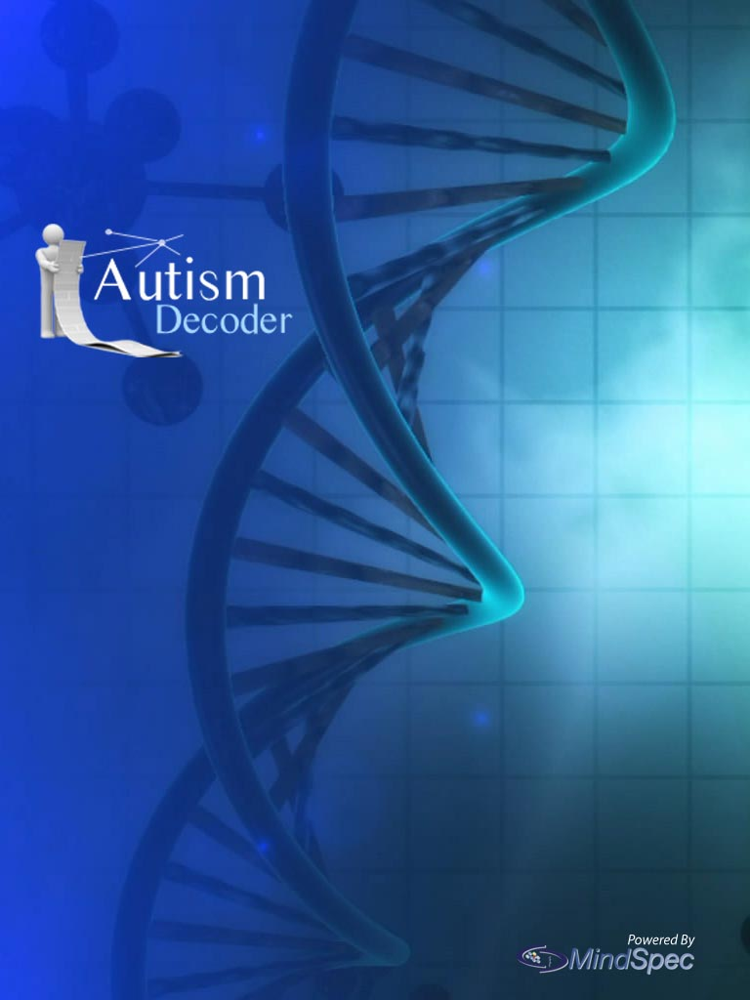
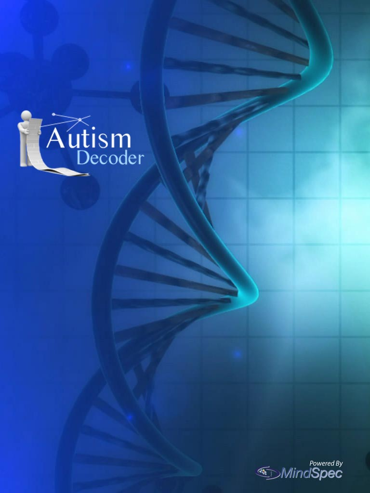

close
About Us
MindSpec is a not-for-profit organization established to accelerate autism research. We develop new tools to integrate research information about autism from diverse scientific disciplines.The goal of our Autism Decoder App is to provide relevant, up-to-date information for the entire autism community, including parents, caregivers, researchers, clinicians, and anyone interested in autism. We aim to summarize recent research studies across a wide range of subjects, from animal studies to therapeutic strategies. Our writing/editorial staff consists of an interdisciplinary team of scientific experts who are supported by an experienced IT staff.
Please note, no information presented in this App should be construed as medical advice. You should contact a medical professional with all health or treatment related questions.
 


New research stories added!